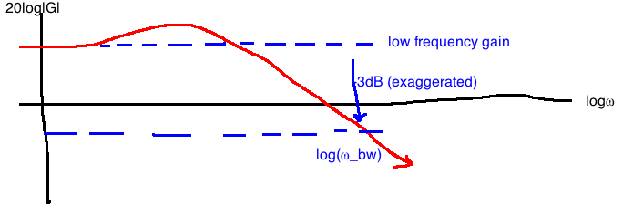
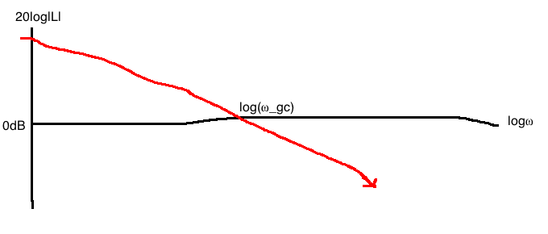

Objective: - decide on the velocity commands to the follower in order to maintain a safe inter-vehicle distance
Assumptions: - cars only move forward and reverse on flat ground - through software running on an embedded computer, we can assign different velocities to the follower - Model for follower: \frac{df(t)}{dt} = u(t), where we decide u(t) - Leader moves at a constant but unknown speed

(See 1.4.1 in the notes)

Consequently, we want to keep the queue length at some known value r(t).
The difficulty is that the service rate is not known, as it depends on many things (e.g. number of clients). Because of this, we will model it as a disturbance d(t).
We must decide on the request rate u(t) based on r(t) and y(t) (queue length).
Control engineering attempts to change the behaviour of a system (called a “plant”) in a useful way despite the presence of external influences (“disturbances”) and despite model uncertainty.
We change the behaviour of the plant by connecting it to another system (“controller”). Feedback is the most powerful interconncetion strategy.
The sense, compute, actuate cycle loops.
for control design, we need a “good” (simple but accurate) mathematical model of how the plant responds to stimuli


q(t) \in \mathbb{R} is the position of the mass M at the time t, output
M > 0, mass in kg
u - an externally applied force (input)
\dot{q} := \frac{dq}{dt}, \quad \ddot{q} := \frac{d^2q}{dt^2}
Assume that q=0 corresponds to the mass location at which the spring is neither stretched nor compressed - “unsprung”.
Newton’s 2nd law: M\ddot{q} = \sum{ \text{forces acting on } M}
Force due to spring: F_K(q) = Kq(t), assumed to be linear, hooke’s law
Force due to damper, possibly nonlinear: C(\dot{q}) where C: \mathbb{R} \rightarrow \mathbb{R}
Altogether, we get a second order nonlinear ODE: M\ddot{q} = u(t) - Kq(t) - C(\dot{q})
Note: if the damper is linear (C(\dot{q})=bq), then the overall system is linear

Applying Newton’s second law on M_1 gives us two coupled second order linear ODEs: M_1\ddot{q_1} = u - Kq_1 + Kq_2 - b\dot{q}_1 + b\dot{q}_2 M_2\ddot{q_2} = Kq_1 - Kq_2 + b\dot{q}_1 - b\dot{q}_2


V_R(t) = h(i(t)), \quad h : \mathbb{R} \rightarrow \mathbb{R} is possibly nonlinear
u(t): applied voltage; y(t): voltage across capacitor
Apply Kirchoff’s Voltage Law: \begin{aligned} -u(t) + V_R(t) + y(t) &= 0\\ \\ i(t) &= C\frac{dy}{dt} \quad \text{(capacitor equation)}\\ V_R &= h(i(t)) = h(C\dot(y))\\ \\ -u(t) + h(C\dot{y}) + y &= 0\\ \end{aligned}
Note: if the resister were linear (h(i) = Ri), the whole system would be linear (see 2.3.4 in notes)
L02 Summary
- control design cycle (course roadmap)
- Ch2 modelling
- examples - mech x2, elec x1
Expectation: model very simple, physical systems, see sec 2.3 of notes
a way to express mathematical models in standard form
Newton’s second law: M\ddot{y} = u - D(\dot{y})
We put this model into a standard form by defining two state variables: x_1 := y \text{ (position)}, \quad x_2 := \dot{y} \text{ (velocity)}
Together, x_1 and x_2 make up the state of the system. We do some rewriting to have a systematic way to do linearization:
\begin{aligned} \dot{x_1} &= x_2 & \text{(state equation)}\\ \dot{x_2} &= \frac{1}{M}u - \frac{1}{M}D(x_2) & \text{(state equation)}\\ y &= x_1 & \text{(output equation)}\\ \end{aligned}
Together, these equations make up the state-space model. These equations have the general form (also called the Nonlinear state-space model):
\dot{x} = f(x,u) \text{, } y = h(x(t))
In this example:
\begin{aligned} x(t) &= \begin{bmatrix} x_1(t) \\ x_2(t)\\ \end{bmatrix} \in \mathbb{R}^2\\ f(x,u) &= \begin{bmatrix} x_2 \\ \frac{1}{M}u - \frac{1}{M}D(x_2) \end{bmatrix}\\ \end{aligned}\\ h(x) = x_1
In the special case where air resistance is a linear function of x_2 (D(x_2)=d x_2), then f(x,u) becomes a linear function of x and u:
f(x,u) = \begin{bmatrix} 0 & 1 \\ 0 & \frac{-d}{M} \end{bmatrix} \begin{bmatrix} x_1 \\ x_2 \end{bmatrix} + \begin{bmatrix} 0 \\ \frac{1}{M} \end{bmatrix} u
Define C = \begin{bmatrix}1 & 0\end{bmatrix}. In the linear case, we get: \begin{aligned} \dot{x} &= Ax + Bu\\ y &= Cx\\ \end{aligned}
This is a linear, time-invariant (LTI) model.
Expect at least one question like this on the midterm
Generalizing this example above, a large class of systems have models of the form:
\begin{aligned} \dot{x} &= f(x, u), & f: \mathbb{R}^n \times \mathbb{R}^m \rightarrow \mathbb{R}^n\\ y &= h(x, u), & h: \mathbb{R}^n \times \mathbb{R}^m \rightarrow \mathbb{R}^p\\ \end{aligned}
The LTI special case is: \begin{aligned} \dot{x} &= Ax + Bu, & A \in \mathbb{R}^{n \times n}, B \in \mathbb{R}^{n \times m}\\ y &= Cx + Du, & C \in \mathbb{R}^{p \times n}, D \in \mathbb{R}^{p \times m}\\ \end{aligned}
In this course, we look at single-input, single-output systems: m=p=1.

\begin{aligned} m&=2, & u &= (u_1, u_2)\\ p&=2, & y &= (y_1, y_2)\\ m&=4, & x &= (x_1, x_2, x_3, x_4) := (y_1, \dot{y_1}, y_2, \dot{y_2})\\ \end{aligned}
\begin{aligned} m&= 4\\u &= (y_1, u_2, u_3, u_4)= (f_1, f_2, f_3, f_4)\\ p&=3\\ y&=(y_1, y_2, y_3)\\ n &= 12\\ x &\in \mathbb{R}^{12} = (\text{position}, \text{3 orientations - roll, pitch, and yaw}, \text{velocity}, \text{angular velocity})\\ \end{aligned}
What is the state of a system?
The state vector x(t_0) encapsulates all of the system’s evolution up to time t_0.
More formally: For any two times t_0 \lt t, knowing x(t_0) and knowing \{u(t) : t_0 \le t \le t_1\}, we can compute x(t_1) and hence y(t_1).
Faraz:System is causal
We know M\ddot{y} = 0 from Newton’s laws.
If we try a 1-dimensional state, say x := y, then knowing x(t_0) without knowing \dot{y} is not enough information to find the position in the future, x(t) for t \gt t_0. We have the same problem if we define x = \dot{y}.
Since the governing equation is second order, we need two initial conditions. So, x=(y, \dot{y}) \in \mathbb{r}^2 is a good choice.
In general, it is a good idea to use:

Model: \ddot{\theta} = \frac{3}{Ml^2} u - 3\frac{g}{l} \sin(\theta)
\begin{aligned} x &= \begin{bmatrix} x_1 \\ x_2 \end{bmatrix} := \begin{bmatrix} \theta \\ \dot{\theta} \end{bmatrix}\\ u &:= \tau \text{ (applied torque)}\\ y &:= \theta \text{ (position)} \end{aligned}
In state space form: \begin{aligned} x &= (\theta, \dot{\theta})\\ y &= \text{angular position} = \theta\\ \\ \dot{x}&=f(x,u) \quad & & \dot{x_1}=x_2\\ \dot{y}&=h(x,u) \quad & & \dot{x_2}=\frac{3}{Ml^2}u - 3\frac{s}{l} \sin(x_1)\\ & & & y = x_1 \end{aligned}
This is nonlinear due to the sine term, its state-space model cannot be written in the form as above
\begin{aligned} x &= \begin{bmatrix} x_1 \\ x_2 \end{bmatrix} := \begin{bmatrix} \text{voltage across cap} \\ \text{current through inductor} \end{bmatrix}\\ u &:= \text{ (applied voltage)}\\ y &:= \text{current through inductor} \end{aligned}
\begin{aligned} x_1 &:= \text{voltage across capacitor} = \frac{1}{C} \int{y(\tau)d\tau}\\ x_2 &:= \text{current through inductor} = y\\ \\ -u + V_R + V_C + V_L &= 0\\ \Rightarrow -u + Rx_2 + x_1 + L\dot{x_2} &= 0, \quad \text{from capacitor equation: } \dot{x_1}=\frac{1}{C} x_2\\ \\ \dot{x} &= \begin{bmatrix} 0 & \frac{1}{C}\\ \frac{-1}{2} & \frac{-R}{L}\end{bmatrix} \begin{bmatrix}x_1\\ x_2\end{bmatrix} + \begin{bmatrix}0 \\ \frac{1}{L}\end{bmatrix} u\\ y &= \begin{bmatrix}0 & 1\end{bmatrix}\\ \end{aligned}
The above is a linear system, and right above this is the state space model
L03 summary
Non-linear time-invariant causal state-space model \begin{aligned} f&: \mathbb{R}^n \times \mathbb{R}^m \to \mathbb{R}^n\\ h&: \mathbb{R}^n \times \mathbb{R}^m \to \mathbb{R}^p \end{aligned} Single-input single output: m = p = 1
State vector: z(t), given x(t_0) and u(t), t_0 \leq t \leq t_1, we can compute y(t_1)
Rule of thumb: 1. mechanical - posn and velocity 2. electrical: Inductor currents and capacitor voltages
LTI SPECIAL CASE
A \epsilon \mathbb{R}^{n\times n};B \epsilon \mathbb{R}^{n\times m};C \epsilon \mathbb{R}^{p\times n};D \epsilon \mathbb{R}^{p\times n};
In this course we always linearize, non-linear system
This refers to the process of approximating a nonlinear state-space model with a linear model
Linearization allows us to use simpler, systematic analysis and design tools
Linearize y=x^3 at the point \bar{x}=1.

Let \bar{y} := f(\bar{x}) = 1^3 = 1
Taylor series at x=\bar{x} is: y=\sum_{n=0}^\infty c_n (x-\bar{x})^n, \quad c_n = \frac{1}{n!} \frac{d^n f(x)}{dx^n} \biggr|_{x=\bar{x}}
Keep only the terms n=0 and n=1: \begin{aligned} f(x) &\approx f(\bar{x}) + \frac{df(x)}{dx}\biggr|_{x-\bar{x}} (x-\bar{x})\\ y - \bar{y} &\approx + \frac{df(x)}{dx}\biggr|_{x-\bar{x}} (x-\bar{x})\\ \end{aligned}
If we define the derivations \partial y := y - \bar{y}, \partial x := x - \bar{x}, then \partial y = \frac{df}{dx} \bigg|_{x=\bar{x}} \partial x, i.e. \partial y = 3 \partial x
y = \begin{bmatrix}y_1 \\ y_2\end{bmatrix} = f(x) = \begin{bmatrix}x_1 x_2 - 1 \\ x_3^2 - 2x_1 x_3\end{bmatrix} =: \begin{bmatrix}f_1(x) \\ f_2(x)\end{bmatrix}
Linearize at \bar{x}=(1, -1, 2).
\bar{y}=f(\bar{x})=\begin{bmatrix}-2\\0\end{bmatrix}
d(x)=f(\bar{x})+\frac{\partial f}{\partial x} \biggr|_{x=\bar{x}} (x-\bar{x}) \text{ + higher order terms}
The Jacobian of f at \bar{x} is: \begin{aligned} \frac{\partial f}{\partial x} \biggr|_{x = \bar{x}} &= \begin{bmatrix} \frac{\partial f_1}{\partial x_1} & \frac{\partial f_1}{\partial x_2} & \frac{\partial f_1}{\partial x_3} \\ \frac{\partial f_2}{\partial x_1} & \frac{\partial f_2}{\partial x_2} & \frac{\partial f_2}{\partial x_3} \\ \frac{\partial f_3}{\partial x_1} & \frac{\partial f_3}{\partial x_2} & \frac{\partial f_3}{\partial x_3} \\ \end{bmatrix}\\ &= \begin{bmatrix} x_2 & x_1 & 0 \\ -2x_3 & 0 & 2x_3-2x_1 \\ \end{bmatrix}_{x=(1, -1, 2)}\\ &= \begin{bmatrix} -1 & 1 & 0\\ -4 & 0 & 2 \end{bmatrix}\\ &= A \end{aligned}
i.e. y-\bar{y} \approx A(x-\bar{x})
You can now think of this as tangent planes to surfaces
By direect extension, at (x,u)=(\bar{x}, \bar{u}): f(x, u) \approx f(\bar{x}, \bar{u})+ \frac{\partial f}{\partial x} \biggr|_{(x,u)=(\bar{x}, \bar{u})} (x-\bar{x}) + \frac{\partial f}{\partial u} \biggr|_{(x,u)=(\bar{x}, \bar{u})} (u-\bar{u})
Let’s apply linearization to \dot{x}=f(x,u), y=h(x,u).
Definition (2.5.1): A constant pair (\bar{x}, \bar{u}) \in \mathbb{R}^n \times \mathbb{R}^m is an equilibrium configuration of the system \dot{x}=f(x,u), y=h(x,u) if f(\bar{x}, \bar{u})=(0,...,0). The constant \bar{x} is the equilibrium point.
\begin{aligned} \dot{x} &= f(x,u)\\ y &= h(x,u)\\ x_1 &= \theta\\ x_2 &= \dot{\theta}\\ f(x,u) &= \begin{bmatrix}x_2\\ \frac{3}{Ml}u-\frac{3g}{l}\sin(x_1)\end{bmatrix}\\ h(x) &= x_1 \end{aligned}
If y=\pi (upright), then \bar{x_1}=\pi. So we have to solve: \begin{bmatrix}0\\0\end{bmatrix} = \begin{bmatrix} \bar{x_2}\\ \frac{3\bar{u}}{Ml} - \frac{3g}{l}\sin(\bar{x_1}) \end{bmatrix} \Rightarrow \bar{x_2}=0, \quad \bar{u}=0
Therefore the equilibria are: \begin{bmatrix}\bar{x_1}\\\bar{x_2}\end{bmatrix} = \begin{bmatrix}\pi + 2\pi k \\ 0\end{bmatrix}, \quad \bar{u}=0
Assume that \dot{x}=f(x,u) has an equilibrium configuration at (x,u)=(\bar{x}, \bar{u}).
f(x,u) \approx \underbrace{f(\bar{x}, \bar{u})}_{=0} + \underbrace{\frac{\partial f}{\partial x} \biggr|_{(x,u)=(\bar{x}, \bar{u})} (x - \bar{x})}_{=: A} + \underbrace{\frac{\partial f}{\partial u} \biggr|_{(x,u)=(\bar{x}, \bar{u})} (u - \bar{u})}_{=:B}
Consider deviations from (\bar{x}, \bar{u}), where ||\partial x||, ||\partial u|| are assumed to be small: \begin{aligned} \partial x(t) &:= x(t) - \bar{x}\\ \partial u(t) &:= u(t) - \bar{u}\\ \end{aligned}
Then we get linearized state equations: \dot{\partial x} = \dot{x} - 0 = f(x,u) \approx A\partial x + B \partial u\\ \dot{\partial x} = A\partial x + B\partial u
Linearized output equation:
\partial y = \underbrace{\frac{\partial h}{\partial x} \biggr|_{(x,u)=(\bar{x},\bar{u})} \partial x}_{=:C} + \underbrace{\frac{\partial h}{\partial u} \biggr|_{(x,u)=(\bar{x},\bar{u})} \partial u}_{=:D}\\ \partial y := y-\bar{y}=y-h(\bar{x},\bar{u})
ss|tf\begin{aligned} \partial \dot{x} &= \begin{bmatrix} 0 & 1 \\ \frac{3g}{2l} & 0 \end{bmatrix} \partial x + \begin{bmatrix}0 \\ \frac{3}{Ml^2}\end{bmatrix} \partial u\\ \partial y &= \begin{bmatrix}1 & 0\end{bmatrix} \partial x\\ \\ G(s) &= C(sI-A)^{-1}B + D, \quad (sI-A)^{-1} = \frac{\text{adj}(sI-A)}{\det(sI-A)}\\ &= \begin{bmatrix}1 & 0\end{bmatrix}\begin{bmatrix}s & -1 \\ \frac{-3g}{2l} & s\end{bmatrix}^{-1}\begin{bmatrix}0 \\ \frac{3}{Ml^2}\end{bmatrix}\\ &= \frac{\begin{bmatrix}1 & 0\end{bmatrix}\begin{bmatrix}s & \frac{3g}{2l} \\ 1 & s\end{bmatrix}^T\begin{bmatrix}0 \\ \frac{3}{Ml^2}\end{bmatrix}}{s^2 - 1.5\frac{g}{l}}\\ &= \frac{3}{(Ml^2)(s^2 - \frac{1.5g}{l})}\\ \end{aligned}
+------+
U(s) -->| G(s) |--> Y(s) Y(s) = G(s)U(s)
+------+
+------+
+->| G(s) |--+
| +------+ |
U(s) -+ +--> Y(s) Y(s) = (G(s) + H(s))U(s)
| +------+ |
+->| H(s) |--+
+------+
D(s)
|
v
+-----+
D(s) | 1/G |
| +-----+
+------+ v | +------+
U(s) -->| G(s) |--o--> Y(s) = U(s) --o-->| G(s) | Y(s) = D(s) + G(s)U(s)
+------+ +------+
+------+
U(s) --o-->| G(s) |--+--> Y(s) Y(s) = G(s)U(s)/(1 + G(s)H(s))
^- +------+ |
| |
| +------+ |
+---| H(s) |--+
+------+
Find the transfer function from U to Y

\begin{aligned} Y(s) &= G_2(s) (G_{ff}(s) U(s) + G_1(s) (U(s) - Y(s)))\\ \frac{Y(s)}{U(s)} = \frac{G_2G_{ff} + G_2G_1}{1 + G_2G_1} \end{aligned}
Y(s) = (G_{ff} + G_1)(\frac{G_2}{1 + GG_2})
e.g.

\begin{aligned} y&=G_3G_2v_2\\ v_2 &= H_2y+G_1v_1-H_2G_2v_1\\ v_1&=u-H_1G_2v_2\\ \\ \begin{bmatrix}1 & H_1 G_2 & 0 \\ -G_1 & 1+H_2G_2 & -H_3 \\ 0 & -G_3G_2 & 1\end{bmatrix} \begin{bmatrix}v_1 \\ v_2 \\ y\end{bmatrix} &= \begin{bmatrix}u \\ 0 \\ 0\end{bmatrix}\\ \\ \text{By cramer's rule:}\\ Y(s) &- \frac{ \det\begin{bmatrix}1 & H_1G_2 & u \\ -G_1 & 1+H_2G_2 & 0 \\ 0 & -G_2G_3 & 0\end{bmatrix} }{ \det\begin{bmatrix}1 & H_1G_2 & 0 \\ -G_1 & 1+H_2G_2 & -H_3 \\ 0 & -G_3G_2 & 1\end{bmatrix} }\\ &= \frac{G_1 G_2 G_3}{1 + H_1 H_2 G_2 - H_3 G_3 G_2 + G_1 H_1 G_2} U(s)\\ \end{aligned}
Let \mathbb{R}(s) be the set of all real rational transfer functions.
A complex number x \in \mathbb{C} is a zero of G(s) if \lim_{s \rightarrow x} |G(s)| = 0.
Poles of G are roots of the denominator
Zeroes are roots of the numerator
The transfer function obtained from a state space model is always rational and always proper
\begin{aligned} \dot{x}&=Ax\\ x &\in \mathbb{R}^n\\ A &\in \mathbb{R}^{n \times n}\\ x(0) &= x_0 \in \mathbb{R}^n \text{ (initial condition) }\\ \end{aligned}
Recall:
Motivated by 1 and 2, define the matrix exponential: e^A := I + A + \frac{A^2}{2!} + ...
\begin{aligned} A &= \begin{bmatrix}0 & 0 \\ 0 & 0\end{bmatrix}\\ \Rightarrow e^A &= I + 0 + 0 + ...\\ &= \begin{bmatrix}1 & 0 \\ 0 & 1\end{bmatrix}\\ \end{aligned}
\begin{aligned} A &= \begin{bmatrix}1 & 0 \\ 0 & 2\end{bmatrix}\\ \text{For a diagonal matrix:}\\ A^k &= \begin{bmatrix}1^k & 0 \\ 0 & 2^k\end{bmatrix}\\ \Rightarrow e^A &= I + \begin{bmatrix}1 & 0 \\ 0 & 2\end{bmatrix} + \begin{bmatrix}1^2 & 0 \\ 0 & 2^2\end{bmatrix} + ...\\ &= \begin{bmatrix}e^1 & 0 \\ 0 & e^2\end{bmatrix}\\ \end{aligned}
A = \begin{bmatrix}0 & 1 & 0 \\ 0 & 0 & 1 \\ 0 & 0 & 0\end{bmatrix}\\ Check that A^3=0 (i.e. A is nilpotent). e^A = I + A + \frac{A^2}{2} = \begin{bmatrix}1 & 1 & \frac{1}{2} \\ 0 & 1 & 1 \\ 0 & 0 & 1\end{bmatrix}\\
Replace A with tA to get a function of time: e^{At} = I + tA + \frac{t^2A^2}{2!} + ...
Theorem: The unique solution to \dot{x}=Ax, \quad x(0)=x_0 is x(t)=e^{tA}x_0.
Take the Laplace transform of \dot{x}=Ax without assuming x(0)=0: \begin{aligned} sX(s) - x(0) &= AX(s)\\ X(s) &= (sI-A)^{-1} x(0)\\ \end{aligned}
Conclusion: e^{At} and (sI-A)^{-1} are Laplace transform pairs.
\begin{aligned} A &= \begin{bmatrix}0&1&0\\0&0&1\\0&0&0\end{bmatrix}\\ sI-A &= \begin{bmatrix}s&-1&0\\0&s&-1\\0&0&s\end{bmatrix}\\ (sI-A)^{-1} &= \frac{\text{adj}(sI-A)}{\det(sI-A)}\\ &= \frac{1}{s^3} \begin{bmatrix}s^2&s&1\\0&s^2&s\\0&0&s^2\end{bmatrix}\\ e^{tA} &= \mathcal{L}^{-1} \left\{ (sI-A)^{-1} \right\}\\ &= \begin{bmatrix}1&t&\frac{t^2}{2}\\0&1&t\\0&0&1\end{bmatrix}, \quad t \ge 0\\ \end{aligned}
The solution of \dot{x}=Ax+Bu, y=Cx+Du, x(0)=x_0 is: x(t) = \underbrace{e^{At}x_0}_\text{initial state response} + \underbrace{\int_0^t e^{A(t-\tau)} Bu(\tau)d\tau}_\text{forced response} Y(t)=Cx(t)+Du(t)
In SISO (single-input-single-output) special case where x(0)=0, we get the familiar result: \begin{aligned} y(t)&=(g * u)(t) = \int_0^t g(t-\tau)u(\tau)d\tau\\ g(t)&=Ce^{At}B 1(t) + D\delta(t) \end{aligned} Where 1(t) is the unit step function and \delta(t) is the unit impulse.
The system \dot{x}=Ax is asymptotically stable if x(t) \rightarrow 0 for any initial condition.
e^{At} \rightarrow 0 if and only if all the eigenvalues of A have a negative real part.
\begin{aligned} M\ddot{q}&=u-Kq \quad \text{(mass-spring)}\\ x &= \begin{bmatrix}x_1\\x_2\end{bmatrix} := \begin{bmatrix}q\\\dot{q}\end{bmatrix}\\ \dot{x} &= \begin{bmatrix}0&1\\\frac{-k}{M}&0\end{bmatrix}x + \begin{bmatrix}0\\\frac{1}{M}\end{bmatrix}u\\ \\ \text{Using } M=1, k=4:\\ e^{At} &= \begin{bmatrix}\cos 2t&\frac{1}{2}\sin 2t\\-2\sin 2t & \cos 2t\end{bmatrix}\\ \end{aligned}
Since e^{At} does not approach 0 as t grows large, the system is not asymptotically stable.
Let’s double-check this using the eigenvalues. Solve for s such that \det(sI-A)=0. \begin{aligned} A &= \begin{bmatrix}0 & 1 \\ -4 & 0 \end{bmatrix}\\ \det \begin{bmatrix}s & -1 \\ 4 & s\end{bmatrix} &= 0\\ s^2 + 4 &= 0\\ s &= \pm 2j \end{aligned} The system is therefore not asymptotically stable since it has at least one eigenvalue (in this case, it has two) with a non-negative real part.
If we introduce friction: \begin{aligned} \ddot{q} &= u-4q-\dot{q} \end{aligned}
Check that it is asymptotically stable (it should be)
Y(s)=G(s)U(s) \quad \text{or} \quad y(t)=(g*u)(t), g(t)=\mathcal{L}^{-1}\left\{G(s)\right\}\\
A signal u(t) is bounded if there exists a constant b such that, for all t \ge 0, |u(t)| \le b.
For example, \sin t is bounded by b=1.
If u is bounded, ||u||_\infty denotes the least upper bound. For example, for \sin t, then |u(t)| \le 10 and u is bounded.
A linear, time-independent system is BIBO stable if every bounded input produces a bounded output. ||u||_\infty is finite \Rightarrow ||y||_\infty is finite.
G(s)=\frac{1}{s+2}. The impulse response is g(t)=\mathcal{L}^{-1}\{G(s)\} = e^{-2t}. Then:
\begin{aligned} y(t) &=(g * u)(t)\\ &= \int_0^t e^{-2\tau} u(t-\tau) d\tau\\ \forall t \ge 0:\\ |y(t)|&=\left|\int_0^t e^{-2\tau} u(t-\tau) d\tau\right|\\ &\le \int_0^t \left|e^{-2\tau} u(t-\tau) \right| d\tau\\ &\le \int_0^t e^{-2\tau} d\tau ||u||_\infty\\ &\le \int_0^\infty e^{-2\tau} d\tau ||u||_\infty\\ &= \frac{1}{2} ||u||_\infty\\ \\ ||y||_\infty &\le \frac{1}{2} ||u||_\infty\\ \therefore \text{ system is BIBO stable. } \end{aligned}
Theorem 3.5.4: Assume that G(s) is rational and strictly proper. Then the following are equivalent:
For example, \frac{1}{s+1}, \frac{1}{(s+3)^2}, \frac{s-1}{s^2+5s+6} are all BIBO stable because their poles have a negative real part.
On the other hand, take \frac{1}{s}, \frac{1}{s-1}. These are all BIBO unstable because they have poles which do not have a negative real part. The function \frac{1}{s} is an integrator, so when you give it a constant function as an input, the output will be a ramp, which is unbounded.
Theorem 3.5.5: If G(s) is rational and improper (the degree of the numerator is greater than the degree of the denominator), then G is not BIBO stable.
\begin{aligned} \dot{x} &= Ax+Bu\\ y&\text{ } *= Cx+Du\\ \Rightarrow Y(s) &= \left(C(SI-A)^{-1}B + D\right)U(s)\\ &= \left(C\frac{\text{adj}(sI-A)}{\det(sI-A)}B + D\right)U(s)\\ \end{aligned}
This is BIBO stable if all poles in \Re(s) \lt 0
This is asymptotically stable if all eigenvalues of A \in \Re(s) \lt 0
Eigenvalues of A = roots of \det(sI-A) \supseteq poles of G(s)=C(sI-A)^{-1}B+D
\begin{aligned} \dot{x} &= \begin{bmatrix}0&1\\-4&0\end{bmatrix}x + \begin{bmatrix}0\\1\end{bmatrix}u\\ y &= \begin{bmatrix}1 & 0\end{bmatrix} x \end{aligned}
Eigenvalues of A are \pm 2j \Rightarrow the system is not asymptotically stable.
\begin{aligned} \frac{Y(s)}{U(s)} &= \begin{bmatrix}1&0\end{bmatrix}\begin{bmatrix}s&1\\4&s\end{bmatrix}^{-1}\begin{bmatrix}0\\1\end{bmatrix}\\ &=\frac{1}{s^2+4}\\ &=G(s) \end{aligned} The system is not BIBO stable based on its poles.
In this example, C\text{adj}(sI-A)B=1 and \det(sI-A)=s^2+4 are coprime, so eigenvalues of A are the poles of G.
Apply a constant b as input to a system. When we observe the output, the steady-state gain of a transfer function G(s) is \frac{Y_{ss}}{b}.
Final Value Theorem (3.6.1): Given F(s)=\mathcal{L}\{f(t)\}, where F(s) is rational:
For example: F(s) = \frac{1}{s^2}, sF(s) = \frac{1}{s}. f(t)=t, which does not converge.
e.g.:
| f(t) | \lim_{t \Rightarrow \infty} f(t) | F(s) | \lim_{s \rightarrow 0} sF(s) | FVT case |
|---|---|---|---|---|
| e^{-t} | 0 | \frac{1}{s+1} | 0 | 1 or 2 |
| 1(t) | 1 | \frac{1}{s} | 1 | 2 |
| t | \infty | \frac{1}{s^2} | \infty | 3 |
| te^{-t} | 0 | \frac{1}{(s+1)^2} | 0 | 1 or 2 |
| e^t | \infty | \frac{1}{s-1} | 0 | 3 |
| \cos{\omega t} | N/A | \frac{s}{s^2 + \omega^2} | 0 | 3 |
Theorem 3.6.2: If G(s) is BIBO stable and we input u(t)=b1(t), then the steady state gain y_{ss}=bG(0). This can be proven using the final value theorem.
This is to say, steady-state gain is always \frac{y_{ss}}{b}=G(0) for any b.
\dot{x}=-2x+u, y=x.
This gives the transfer function Y(s)=\frac{1}{d+2}U(s).
Given a constant reference r(t)=r_o 1(t) where r_0 constant, find a control signal u to make y go to r.
We want \lim_{t \rightarrow \infty} y(t) = r_0.
Try open loop:
\begin{aligned} y_{ss} &= \lim_{t \rightarrow \infty} y(t)\\ &=^? \lim_{s\rightarrow 0} sC(s)R(s) \\ &= \lim_{s\rightarrow 0} C(s) \frac{1}{s+2} r_0\\ \end{aligned}
If C(s) is BIBO stable, then y_{ss} = \lim_{s \rightarrow 0} C_s \frac{r_0}{s+2} = C(0) \frac{1}{2} r_0. So, y_{ss} = r_0 \Leftrightarrow C(0) = 2 = \frac{1}{P(0)}.
The simplest choice is C(s) = \frac{1}{P(0)} = 2, a proportional controller.
Y(s)=G(s)U(s) or y(t)=(g*u)(t).
Assume G is BIBO stable, and the input signal u is a sinusoid: u(t) = \cos(\omega t).
The period is \frac{2\pi}{\omega}.
Theorem 3.7.1: Assuming G is rational and BIBO stable, then if u(t)=\cos(\omega t), then the steady-state output is y(t) = A\cos(\omega t + \phi). A=|G(j\omega)|, and \phi = \angle G(j\omega)
\dot{x}=-10x+u, y=x. Then Y(s) = \frac{1}{s+10}U(s) =: G(s)U(s). If u(t)=2\cos(3t+ \frac{\pi}{6}), what is the steady-state output?
A=|G(3j)|=\left|\frac{1}{3j+10}\right|\approx 0.1 \phi = \angle G(3j) = \angle \frac{1}{3j+10} = \angle1 - \angle(3j+10) \approx 0.2915
Therefore y(t)=0.2\cos(3t+\frac{\pi}{6}-0.2915).
Definition 3.7.2. If G(s) \in \mathbb{R}(s) and is BIBO stable, then:
To sketch the Bode plot of any rational transfer function, we only need to know how to sketch four terms:
Given a transfer function, we can decompose it into these terms.
\Re(G(j\omega)) vs \Im(G(j\omega))
\begin{aligned} G(s) &= \frac{40s^2(s-2)}{(s+5)(s^2 + 4s+100)}\\ &= \frac{40s^2(2)\left(\frac{s}{2}-1\right)}{5(100)\left(\frac{3}{5}+1\right)\left(\frac{s^2}{10^2}+\frac{4s}{10}+j\right)}\\ &= \frac{40(2)}{5(100)} \cdot \frac{s^2(\frac{s}{2}-1)}{(\frac{s}{5}+1)(\frac{s^2}{10^2}+\frac{4s}{10^2}+1)}\\ \end{aligned}
To plot the Bode plot, we need: \begin{aligned} 20\log|G(j\omega)|&=20\log\left|\frac{80}{500}\right| + 20\log|(j\omega)^2| + 30\log\left|\frac{j\omega}{2}-1\right|\\ &=-20\log\left|\frac{j\omega}{5}+1\right| - 20\log\left|\frac{(j\omega)^2}{10^2} + \frac{4}{10^2}j\omega + 1\right|\\ \\ \angle G(j\omega)&=\angle\frac{800}{500}+\angle(j\omega)^2 + \angle\frac{j\omega}{2}+1-\angle\frac{j\omega}{5}+1-\angle\left(\frac{(j\omega)^2}{10^2}+\frac{4}{10^2}j\omega + 1\right)\\ \end{aligned}
For G(j\omega)=K:
Polar:
Bode:
For G(j\omega)=j\tau \omega + 1 (the transfer function with a zero at s=\frac{-1}{\tau})
Polar:
Bode:
Approximations for sketching:
Sub-case: G(s) = \tau s - 1 (zero at s=\frac{1}{\tau})
Polar plot: - From the polar plot, the magnitude Bode plot is unchanged - for the phase plot, start at \pi for small \omega and goes to \frac{\pi}{2} as \omega \rightarrow \infty
e.g. G(s) = \frac{100}{s+10} = \frac{100}{10} \cdot \frac{1}{\frac{s}{10}+1} = 10 \frac{1}{\frac{s}{10}+1}
Frequency response: G(j\omega)=10\frac{1}{\frac{j\omega}{10}+1} Magnitude: 20\log|G(j\omega)|=\underbrace{20\log10}_{A}-\underbrace{20\log\left|\frac{j\omega}{10}+1\right|}_B Phase: \angle G(j\omega) = \underbrace{\angle 10}_A - \underbrace{\angle \frac{j\omega}{10}+1}_B
The bandwidth of the above system is the smallest frequency \omega_{BW} such that: |G(j\omega_{BW})|=\frac{1}{\sqrt{2}}|G(0)| In dB: 20\log|G(0)|-20\log|G(j\omega)|=3dB
From the Bode plot, \omega_{BW}=1.0 \text{ rad/s}
e.g. G(s)=s^n

G(s) = \frac{s^2}{\omega_n^2}+\frac{2\zeta}{\omega_n}s + 1, \quad \zeta \in [0,1), \quad \omega_n \ne 0 G(j\omega)=\left(1-\frac{\omega^2}{\omega_n^2}\right) + j\cdot 2\zeta \frac{\omega}{\omega_n}
Observations: - If \omega \lt\lt |\omega_n|, |G(j\omega)| \approx 1, \angle G(j\omega) \approx 0 - If \omega \gt\gt |\omega_n|, |G(j\omega)| \approx \frac{\omega^2}{\omega_n^2}, \angle G(j\omega) \approx 180^{\circ}
For asymptotic Bode plots of complex conjugate roots, approximate G(s) as two first order terms with roots at -\omega_n. i.e., set \zeta=1: \begin{aligned} G(s)&=\frac{s^2}{\omega_n^2}+\frac{2\zeta s}{\omega_n} + 1\\ &\approx \frac{s^2}{\omega_n^2}+\frac{2s}{\omega_n}+1\\ &=\left(\frac{s}{\omega_n}+1\right)^2\\ &= (\tau s + 1)^2, \quad \tau = \frac{1}{\omega_n}\\ \end{aligned}
g(t) = Ce^{At} 1(t) + D \delta(t) G(s) = C(sI-A)^{-1}B+D
We study two specific but useful systems
\tau \dot{y} = ku or \frac{Y(s)}{U(s)} = \frac{K}{\tau s + 1} or \begin{aligned} \dot{x}&=\frac{-x}{\tau} + \frac{K}{\tau} u\\ y &= x \end{aligned}
Observations:
Step response: u(t) = 1(t) y(t) = \mathcal{L}^{-1}\{G(s)U(s)\} = \mathcal{L}^{-1}\left\{\frac{K}{\tau s + 1} \frac{1}{s}\right\} = \mathcal{L}^{-1}\left\{\frac{K}{s} - \frac{K}{s + \frac{1}{\tau}}\right\} K(1-e^{\frac{-t}{\tau}}), \quad t \ge 0
Observations: [Sampling every \tau seconds]
Y(s) = \frac{K_pK}{T_s + 1 + K+pK} = \frac{\frac{K_pK}{1 + K_pK}}{\frac{\tau s}{1 + K_pK} + 1}
If r(t) = 1(t) and all initial conditions are zero
y(t) = \frac{K_pK}{1 + K_pK}(1 - e^{\frac{-t}{\frac{\tau}{1 + K_pK}}})\;t\geq 0
\ddot{y}+2\zeta\omega_n \dot{y} + \omega_n^2 y = K\omega_n^2 u or \frac{Y(s)}{U(s)} = \frac{K\omega_n^2}{s^2 + 2\zeta\omega_n s + \omega_n^2} or \begin{aligned} \dot{x} &= \begin{bmatrix}0&1\\-\omega_n^2&-2\zeta\omega_n\end{bmatrix}x + \begin{bmatrix}0\\K\omega_n^2\end{bmatrix}u\\ y &= \begin{bmatrix} 1 & 0\end{bmatrix}x\\ \end{aligned}
\begin{aligned} M \ddot{q} &= u - K_{spring} q - b\dot{q}\\ \frac{Y(s)}{U(s)} &= \frac{\frac{1}{M}}{s^2 + \frac{b}{M}s + \frac{K_{spring}}{M}}\\ \\ \omega_n &= \sqrt{\frac{K_{spring}}{M}}\\ \zeta &= \frac{b}{2 \sqrt{K_{spring}M}}\\ K &= \frac{1}{K_{spring}} \end{aligned}
From the quadratic formula, find the zeroes of the denominator: s = -\zeta \omega_n \pm \omega_n \sqrt{\zeta^2 - 1} = \omega_n\left(-\zeta \pm \sqrt{\zeta^2 - 1}\right)
Pole locations are used to categorize the system:
Steady-state gain: K Zeroes: none
g(t) = K\frac{\omega_n}{\sqrt{1-\zeta^2}} \underbrace{e^{-\zeta \omega_n t}}_\text{decay rate} \sin\underbrace{\left(\omega_n \sqrt{1-\zeta^2} t\right)}_\text{oscillation rate}, \quad t \ge 0
Observe: If we fix \zeta \in (0,1), then larger bandwidth \Leftrightarrow faster decay
\begin{aligned} u(t) &= 1(t)\\ \Rightarrow U(s) &= \frac{1}{s}\\ \\ Y(s) &= G(s)U(s)\\ \Rightarrow y(t) &= \mathcal{L}^{-1}{G \dot U}\\ &= K\left(1 - \frac{1}{\sqrt{1 - \zeta^2}} e^{-\zeta \omega_n t} \sin\left(\omega_n \sqrt{1 - \zeta^2}t + \theta\right)\right), \quad \theta = \arccos \zeta\\ \end{aligned}
\frac{Y(s)}{U(s)} = \frac{\frac{1}{M}}{s^2 + \frac{b}{M}s + \frac{K_{spring}}{M}}
\begin{aligned} \zeta &= \frac{b}{2\sqrt{MK_{spring}}}\\ \zeta &\ge \frac{-\ln(\%OS_{max})}{\sqrt{\pi^2 + (\ln\%OS_{max})^2}} =:\zeta_{min}\\ \\ \text{To meet specs:}\\ \frac{b}{2\sqrt{MK_{spring}}} \ge 0.6901\\ \end{aligned}
The angle the poles make is \pm(\pi - \arccos \zeta). \zeta \ge \zeta_{min} \Leftrightarrow \theta \le \arccos(\zeta_{min}) In this example, \theta \le 46^{\circ} Therefore the overshoot spec is not met if there are poles in the shaded region.
Find the condition so that T_s \le T_s^{max} = 3
\begin{aligned} G(s) &= \frac{\frac{1}{M}}{s^2 + \frac{b}{M}s + \frac{K_{spring}}{M}}\\ \frac{4}{\zeta \omega_n} &\le 3 = T_s^{max}\\ \Leftrightarrow \zeta\omega_n &\ge \frac{4}{T_s^{max}}\\ \Leftrightarrow \frac{b}{2M} &\ge \frac{4}{3}\\ \end{aligned}
Spec: T_p \le T_p^{max} = 3 \text{ seconds }
\begin{aligned} \omega_n\sqrt{1-\zeta^2} &\le \frac{\pi}{T_p^{max}}\\ \Leftrightarrow \sqrt{\frac{K_{spring}}{M} - \frac{b^2}{4M^2}} &\le \frac{\pi}{3}\\ \end{aligned}

| decrease real part | increase imaginary part | angle of poles to \pm \pi | increase magnitude | |
|---|---|---|---|---|
| \omega_n | + | + | no change | + |
| \zeta | + | - | + | no change |
| %OS | - | + | - | no change |
| T_s | - | no change | - | - |
| T_p | no change | - | + | - |
Design a controller to keep the pendulum in upright position.
\begin{aligned} \text{Model:}\\ \dot{x_1}&=x_2\\ \dot{x_2}&= \frac{-g}{l}\sin x_1 + \frac{1}{Ml^2}u\\ y&=x_1\\ \\ \text{Equilibrium config } (\bar{x}, \bar{u}) \text{ at which } y=\pi \text{ is: }\\ (\bar{x}, \bar{u}) &= \left(\begin{bmatrix}\pi\\0\end{bmatrix}, 0\right)\\ \\ \text{Linearization:}\\ \dot{\partial x} &= \begin{bmatrix}0&1\\\frac{g}{l}&0\end{bmatrix} \partial x + \begin{bmatrix}0\\\frac{1}{Ml^2}\end{bmatrix}\partial u\\ \partial x &:= x-\bar{x}\\ \partial u &:= u-\bar{u}\\ \partial y &:= y-\bar{y}\\ &= \begin{bmatrix}1 & 0\end{bmatrix}\partial x\\ \\ \text{Transfer function:}\\ U(s) &:= \mathbb{L}\{\partial u\}, Y(s) := \mathbb{L}\{\partial y\}\\ \\ \text{Poles:}\\ s &= \pm \sqrt{\frac{g}{l}}\\ \\ \frac{Y(s)}{U(s)} = \frac{1}{Ml^2} \frac{1}{s^2 - \frac{g}{l}} =: P(s)\\ \end{aligned}
One controller that does the job is C(s) = 100 + \frac{s+10}{s+20}, a “lead” controller.
With this choice of controller, the TF from R to Y is: \frac{Y(s)}{R(s)} = \frac{C(s)P(s)}{1 + C(s)P(s)} = \frac{100s+1000}{s^3 + 20s^2 + 99s + 980}
Closed-loop poles: \{-17.5, -1 \pm 7.3j\}
Closed-loop response is dominated by poles at s=-1 \pm 7.3j, making it look like an underdamped second-order system with a lot of overshoot because of the large angle from the x axis.
Input signal: From 0 to 5s, move in the counter-clockwise direction by 1 radian. After 5s, return to the upright position.
To implement the controller, we have the following (A/D means analogue to digital):
In this case, using a “bilinear transformation”, we get:
u[k] = \frac{1}{2+20T}\left((20T-2)u[k-1]+100(2+10T)e[k]+100(10T-2)e[k-1]\right)
Where:
Systems
Signals
What does it mean for this system to be stable?
Assume P and C are rational; P is strictly proper; C is proper.
Set r(t)=d(t)=0. Bring in state-space models for C and P.
\begin{aligned} \dot{x_c} &= A_cx_c+B_ce\\ u &= C_cx_c+D_ce\\ \\ \dot{x_p} &= A_p x_p + B_pu\\ y &= C_px_p\\ \end{aligned}
We get: \underbrace{\begin{bmatrix}\dot{x_p}\\\dot{x_c}\end{bmatrix}}_{x_{cl}} = \underbrace{\begin{bmatrix}A_p-B_pD_cC_p&B_pC_c\\-B_cC_p&A_c\end{bmatrix}}_{A_{cl}}\begin{bmatrix}X_p\\x_c\end{bmatrix}
The closed-loop system is internally stable if \dot{x_{cl}}=A_{cl}x_{cl} is asymptotically stable.
Given: \begin{aligned} \dot{x_p} &= \begin{bmatrix}0&1\\0&-5\end{bmatrix}x_p + \begin{bmatrix}0\\1\end{bmatrix}u\\ y &= \begin{bmatrix}1&0\end{bmatrix}x_p\\ \dot{x_c} &= -15x_c + e\\ y &= -1000x_c + 100e\\ \end{aligned}
Then: \begin{aligned} A_{cl} &= \begin{bmatrix} \begin{bmatrix}0&1\\0&-5\end{bmatrix}-\begin{bmatrix}0\\1\end{bmatrix}100\begin{bmatrix}1&0\end{bmatrix} & -\begin{bmatrix}0\\1\end{bmatrix} \\ -\begin{bmatrix}1&0\end{bmatrix} & -15 \end{bmatrix}\\ &= \begin{bmatrix}0&1&0\\-100&-5&-1000\\-1&0&-15\end{bmatrix}\\ \\ \det(sI-A_{cl}) &= \det\begin{bmatrix}s&-1&0\\100&s+5&1000\\1&0&s+15\end{bmatrix}\\ &= s(s+5)(s+15)+100(s+5)\\ &= (s+5)(s^2+15s+100)\\ \end{aligned}
You can check that all the roots of the determinant (all the eigenvalues) have negative real parts. This implies that \dot{x_{cl}}=A_{cl}x_{cl} is asymptotically stable, and therefore the feedback system is internally stable.
Given the same feedback loop as before:
This system has 6 transfer functions from (r, d) to (e, u, y). Finding them:
\begin{aligned} Y &= PU\\ E &= R - PU\\ U &= D+CE\\ \Rightarrow \begin{bmatrix}1&P\\-C&1\end{bmatrix}\begin{bmatrix}E\\U\end{bmatrix}&=\begin{bmatrix}R\\D\end{bmatrix}\\ \begin{bmatrix}E\\U\end{bmatrix} &= \frac{1}{1+PC}\begin{bmatrix}1&-P\\C&1\end{bmatrix}\begin{bmatrix}R\\D\end{bmatrix}\\ \\ \frac{E}{R} &= \frac{1}{1+PC}\\ \frac{E}{D} &= \frac{-P}{1+PC}\\ \frac{U}{R} &= \frac{C}{1+PC}\\ \frac{U}{D} &= \frac{1}{1+PC}\\ \frac{Y}{R} &= \frac{PC}{1+PC}\\ \frac{Y}{D} &= \frac{P}{1+PC}\\ \end{aligned}
A feedback system is input-output stable if (e, u, y) are bounded whenever (r, d) are bounded.
Since whenever r and e are bounded, so is y=r-e, we only need to look at the TFs from (r,d) to (e,u).
P(s)=\frac{1}{(s+1)(s-1)}, \quad C(s)=\frac{s-1}{s+1}
The for transfer functions are: \begin{aligned} \begin{bmatrix}E\\U\end{bmatrix} &= \begin{bmatrix} \frac{(1+1)^2}{s^2+2s+2} & \frac{s+1}{(s-1)(s^2+2s+2)} \\ \frac{(s+1)(s-1)}{s^2+2s+2} & \frac{(s+1)^2}{s^2+2s+2} \end{bmatrix} \begin{bmatrix}R\\D\end{bmatrix} \end{aligned} Three of these TFs are BIBO stable; the one from D to E is not. Therefore the feedback system is not input-output stable.
Observe: \frac{Y(s)}{R(s)}=\frac{1}{s^2+2s+2} This is BIBO stable, so don’t be fooled. The problem is that C cancels an unstable pole of the plant. Input-output stability is more than just the stability of one transfer function.
Write: P(s)=\frac{N_p}{D_p}, \quad C(s)=\frac{N_c}{D_c}
N_p, D_p, D_c are polynomials in s
\deg(N_p) \lt \deg(D_p), \deg(N_c) \le \deg(D_c)
(N_p, D_p) and (N_c, D_c) are coprime
The characteristic polynomial of the feedback system is: \pi(s) := N_p(s)N_c(s) + D_p(s)D_c(s)
P(s)=\frac{1}{(s+1)(s-1)}, \quad C(s)=\frac{s-1}{s+1} \begin{aligned} \pi(s)&=(1)(s-1)+(s+1)(s-1)(s+1)\\ &= (s-1)(s^2 + 2s + 2) \end{aligned}
The characteristic polynomial has an unstable root, the one we cancelled.
Theorem 5.2.6. The feedback system is input-output stable if and only if its characteristic polynomial has no roots with \Re(s) \ge 0.
Observe: \begin{aligned} \begin{bmatrix}\frac{1}{1+PC} & \frac{-P}{1_PC} \\ \frac{C}{1+PC} & \frac{1}{1+PC}\end{bmatrix} &= \frac{1}{\pi(s)}\begin{bmatrix}D_pD_c & -N_pD_c \\ D_pN_c & D_pD_c \end{bmatrix}\\ \end{aligned}
The plant P(s) and the controller C(s) have a pole-zero cancellation if there exists a complex number \lambda \in \mathbb{C} such that N_p(\lambda) = D_c(\lambda)=0 or D_p(\lambda)=N_c(\lambda)=0.
It is an unstable cancellation if \Re(\lambda) \ge 0.
If there is an unstable pole-zero cancellation, then the feedback system is unstable. Proof: Assume there isi an unstable pole-zero cancellation at \lambda \in \mathbb{C} with \Re(\lambda) \ge 0.
\begin{aligned} \pi(\lambda) &= N_p(\lambda)N_c(\lambda) + D_p(\lambda)D_c(\lambda)\\ &= 0 + 0\\ \end{aligned} So \lambda is a root of \pi, so by Theorem 5.2.6, the system is unstable.
It can be shown that the roots of \pi are a subset of the eigenvalues of A_{\text{closed loop}}. So, internal stability implies input-output stability.
Consider an nth order polynomial: \pi(s) = s^n + a_{n-1}s^{n-1} + ... + a_1s + a_0
\pi(s) is Hurwitz if all its roots have \Re(s) \lt 0.
The Routh-Hurwitz Criterion is a test to determine if a polynomial is Hurwitz without actually computing the roots. It is a necessary condition for a polynomial to be Hurwitz.
Let \{\lambda_1, ..., \lambda_r\} be the real roots of \pi.
Let \{\mu_1, \bar{\mu_1}, ..., \mu_s, \bar{\mu_s}\} be the complex conjugate roots of \pi.
r+2s=n
Then, we can write: \pi(s) = (s - \lambda_1)...(s - \lambda_r)(s-\mu_1)(s-\bar{\mu_1})...(s-\mu_s)(s-\bar{\mu_s})
If \pi is Hurwitz, then all the roots have \Re(s) \lt 0, so the real roots have to be negative. Then -\lambda_i \gt 0.
For the complex conjugate roots: \begin{aligned} (s-\mu_i)(s-\bar{\mu_i}) &= s^2 + (-\mu_i - \bar{\mu_i})s + \mu_i\bar{\mu_i}\\ &= s^2 - 2\Re(\mu_i)s + |\mu_i|^2\\ \end{aligned} If \pi is Hurwitz, then -\Re(\mu_i)\gt 0 and |\mu_i| \ne 0. If we expand \pi(s) out again, all the coefficients a_i will be positive.
s^4+3s^3-2s^2+5s+6 We have a coefficient with a negative sign, so we immediately know it is not Hurwitz.
s^3+4s+6 We have a coefficient of 0, and since we need all to be positive, we know it is not Hurwitz.
s^3+5s^2+9s+1 We are not sure whether or not this is Hurwitz.
Input to the algorithm is a polynomial: \pi(s) = s^2 + a_{n-1}s^{n-1}+...+a_1s+a_s
We create a Routh Array:
| s^n | 1 = r_{0,0} | a_{n-2} = r_{0,1} |
| s^{n-1} | a_{n-1} = r_{1,0} | a_{n-3} = r_{1,1} |
| s^{n-2} | r_{2,0} | r_{2,1} |
| s^{n-3} | r_{3,0} | r_{3,1} |
| … | … | … |
| s^{1} | r_{n-1,0} | r_{n-1,1} |
| s^{0} | r_{n,0} | r_{n,1} |
\begin{aligned} r_{2,0} &= \frac{a_{n-1}a_{n-2} - (1)a_{n-3}}{a_{n-1}}\\ r_{2,1} &= \frac{a_{n-1}a_{n-4} - (1)a_{n-3}}{a_{n-1}}\\ r_{2,2} &= \frac{a_{n-1}a_{n-6} - (1)a_{n-3}}{a_{n-1}}\\ &...\\ \\ \end{aligned}
The fourth row is computed from the second and third using the same pattern: \begin{aligned} r_{3,0} &= \frac{r_{2,0}r_{1,1} - r_{1,0}r_{2,1}}{r_{2,0}}\\ \end{aligned}
e.g. \pi(s) = a_2s^2 + a_1s + a_0
| s^2 | a_2 | a_0 |
| s^1 | a_1 | 0 |
| s^0 | \frac{a_1a_0-a_2(0)}{a_1} = a_0 |
\pi is Hurwitz if and only if \text{sgn}(a_2) = \text{sgn}(a_1) = \text{sgn}(a_0)
e.g. \pi(s) = 2s^4 + s^3 + 3s^2 + 5s + 10
| s^4 | 2 | 3 | 10 |
| s^3 | 1 | 5 | 0 |
| s^2 | \frac{(1)(3)-(2)(5)}{1}=7 | 10 | |
| s^1 | \frac{(-7)(5)-(1)(10)}{-7}=\frac{45}{7} | ||
| s^0 | 10 |
There are two sign changes: \{+, +, -, +, +\}
Therefore \pi has two roots in \mathbb{C}.
P(s) = \frac{1}{s^4+6s^3+11s^2+6s} \pi(s) = s^4 + 6s^3 + 11s^2 + 6s + K_p
| s^4 | 1 | 11 | K_p |
| s^3 | 6 | 6 | 0 |
| s^2 | 10 | K_p | 0 |
| s^1 | \frac{60-6K_p}{10} | ||
| s^0 | K_p |
System is IO stable if and only if 0 \lt K_p \lt 10.
Typical specs for control design: - stability (mandatory) - transient behaviour (see Chapter 4) - steady-state (tracking and disturbance rejection)
\begin{aligned} r(t)&=1(t)\\ C(s)&=\frac{1}{s} \text{ (integrator) }\\ P(s) &= \frac{1}{s+1}\\ \end{aligned}
Tracking error := r-y
\begin{aligned} E(s) &= \frac{1}{1+C(s)P(s)}R(s)\\ &= \frac{s(s+1)}{s^2 + s + 1}R(s)\\ \end{aligned}
The transfer function is BIBO stable, so we can use Final Value Theorem \begin{aligned} e_{ss} &:= \lim_{t\rightarrow\infty}e(t)\\ &=\lim_{s\rightarrow 0} sE(s)\\ &=\lim_{s\rightarrow 0} s\frac{s(s+1)}{s^2 + s + 1}\frac{1}{s}\\ &= 0\\ \end{aligned}
So we get perfect asymptotic step tracking.
Why does it work? The pole in the controller turns into a zero in the numerator of the transfer function. In general, C(s) has an “internal model” of R(s) (an integrator). This puts a zero at s=0 in the transfer function.
P(s)=\frac{1}{s+1}, \quad C(s) = \frac{1}{s}, \quad R(s) = \frac{1}{s} \quad (r(t)=1(t))
The controller contains a “copy” of R in it and e(t) \rightarrow 0.
Other interpretations of why this controller gives perfect step tracking: Frequency domain: P(s)C(s) has a pole at s=0. So, as \omega \rightarrow 0: \frac{E(j\omega)}{R(j\omega)} = \frac{1}{1 + C(j\omega)P(j\omega)} \rightarrow 0
Pole at s=0 \Rightarrow infinite gain. Line is 20\log|P(j\omega)C(j\omega)| Time domain: If the system is IO stable, then in steady-state, all signals in the loop approach a constant value for constant input.
Let v(t) be the output of the integrator.
\begin{aligned} v(t) &= \int_0^t e(\tau)d\tau\\ \dot{v}&=e\\ \end{aligned}
So for v to be constant in steady-state, e must approach zero.
More generally, if C(s) provides internal stability, then FVT can be applied and: \begin{aligned} \lim_{t \rightarrow \infty} e(t) &= \lim_{s \rightarrow 0} sE(s)\\ &= \lim_{s \rightarrow 0} s\frac{1}{1+P(s)C(s)}R(s)\\ &= \lim_{s \rightarrow 0} s\frac{1}{1+P(s)C(s)}\frac{r_0}{s}\\ &= \lim_{s \rightarrow 0} \frac{r_0}{1+P(s)C(s)}\\ \\ e_{ss} = 0 &\Leftrightarrow \lim_{s \rightarrow 0} P(s)C(s) = \infty\\ \end{aligned}
Conclusion: Integral control is fundamental for perfect step tracking.
If P(s) doesn’t have a pole at 0, pick C(s) = \frac{1}{s} C_1(s). Design C_1(s) to give IO stability.
Assume IO stability. If C(s)P(s) contains an internal model of the unstable part of R(s), then e(t) \rightarrow 0.
Say R(s) = \frac{N_r(s)}{D_r(s)} = \frac{N_r(s)}{D_r^-(s)D_r^+(s)}. Roots of D_r^+(s) have \Re(s) \gt 0.
IMP says that if C(s)P(s) = \frac{N(s)}{D(s)D_r^+(s)}, then e_{ss}=0.
P(s)=\frac{1}{s+1}, \quad r(t) = r_0\sin(t)
R(s) = \frac{r_0}{s^2+1}, so D_r^-(s)=1 and D_r^+(s)=s^2+1
This suggests the controller C(s) = \frac{1}{s^2+1}C_1(s) where C_1 is chosen to ensure IO stability.
\begin{aligned} Y &= P_2(D+P_1C(-Y))\\ \frac{Y}{D} &= \frac{P_2}{1+P_1P_2C}\\ \end{aligned}
Suppose: \begin{aligned} D(s) &= \frac{N_d(s)}{D_d(s)}\\ &= \frac{N_d(s)}{D_d^-(s)D_d^+(s)}\\ \end{aligned}
Roots of D_d^+(s) have \Re(s) \ge 0.
Assume IO stability so FVT applies: \begin{aligned} lim_{t\rightarrow\infty} y(t) &= \lim_{s \rightarrow 0}sY(s)\\ &= \lim_{s \rightarrow 0}s\frac{P_2(s)}{1+P_1P_2C}\frac{N_d}{D_d^-D_d^+}\\ &= \lim_{s \rightarrow 0}s\frac{N_{p_2}D_{p_1}D_c}{D_{p_2}D_{p_1}D_c+N_{p_1}N_{p_2}N_c}\frac{N_d}{D_d^-D_d^+}\\ \\ \mathcal{L}\{y\} &= Y(s)\\ \end{aligned}
So we see that to deal simultaneously with input and output disturbances, the controller must contain an internal model of D_d^+(s) (can’t rely on the plant.) i.e., C(s)=\frac{1}{D_d^+(s)}C_1(s)
d(t)=1(t), \quad D(s)=\frac{1}{s}, \quad D_d^+(s)=s, \quad C(s)=\frac{1}{s}C_1(s) D(t)=\sin(\omega t), \quad D(s)=\frac{\omega}{s^2+\omega^2}, \quad D_d^+(s)=s^2+\omega^2, \quad C(s)=\frac{1}{S^2+\omega^2}C_1(s)
D(t)=e^{-t}, \quad D(s)=\frac{1}{s+1}, \quad D_d^+(s)=1
C(s)=K_p, \quad P(s) = \frac{1}{s(s+2)} \begin{aligned} \pi(s) &= s^2 + 2s + K_p\\ s &= -1 \pm \sqrt{1-K_p}\\ \end{aligned}
sisotool or rltool \pi(s) = \underbrace{D_pD_c}_{D(s)} + K\underbrace{N_pN_c}_{N(s)}
\pi(s) = \underbrace{D_pD_c}_{D(s)} + K\underbrace{N_pN_c}_{N(s)}
A root-locus diagram is a drawing of how the roots of \pi change as K is changed.
Assumptions:
Let n:=\deg(D(s)), m:=\deg(N(s))
Rules

Given an nth-order polynomial \pi(s)=D(s)+KN(s)
P(s)=\frac{1}{s^2+2s+5}, \quad C(s)=K\left(1+\frac{1}{0.25s}\right)
\begin{aligned} \pi(s)&=N_cN_p+D_cD_p\\ &= s(s^2+2s+s)+K(s+4)\\ &=:D(s)+KN(s)\\ \end{aligned}

\pi(s)=D(s)+KN(s), \quad D(s)=s^3(s+4), \quad N(s)=s+1 n=4 m=1
\sigma = \frac{-4 - (-1)}{4-1} = -1

\frac{Y(s)}{U(s)} = P(s)=\frac{\frac{1}{Ml}}{s^2 - \frac{g}{Ml}(m+M)}
Try C(s)=K_p. We get: \begin{aligned} \pi(s)&=D_pD_c+N_pN_c\\ &=s^2-\frac{g(M+m)}{Ml}+\frac{K_p}{Ml}\\ \\ D(s)&:=s^2-\frac{g}{Ml}(m+M)\\ N(s)&:=1\\ K&:=\frac{K_p}{Ml}\\ \end{aligned}
Asymptotes: \sigma = 0 n-m=2-0=2

Proportional control won’t work.
Matlab: suppose you have a controller P(s)C(s)=\frac{8(s+2)}{(s+1)(s+5)(s+10)}. In matlab:
\begin{aligned} C(s) &= K_p(1+T_ds)\\ &= K_pT_d\left(s+\frac{1}{T_d}\right)\\ \\ \pi(s) &= \underbrace{s^2- \frac{g}{Ml}(M+m)}_{D(s), \quad n=2} + \underbrace{\frac{K_pT_d}{Ml}}_{K}\underbrace{\left(s+\frac{1}{T_d}\right)}_{N(s), \quad m=1}\\ \end{aligned}

\begin{aligned} C(s)&=K_p\left(1+\frac{1}{T_is}\right)\\ &= K_p \frac{s+\frac{1}{T_i}}{s}\\ \\ \pi(s) &= \underbrace{s\left(s^2-\frac{g}{Ml}(m+M)\right)}_{D(s)} + \underbrace{\frac{K_p}{M_l}}_K \underbrace{\left(s+\frac{1}{T_i}\right)}_{N(s)}\\ \\ \sigma &= \frac{1}{2T_i}\\ \end{aligned}

In this case, the characteristic polynomial is: \pi(s)=N_pN_cN_h + D_pD_cD_h
Identify D, N, and K, and proceed as before.
Even if we can’t factor K out from C(s), the characteristic polynomial can still be expressed in the form \pi(s)=D(s)+KN(s), but now, D \ne D_pD_c and N \ne N_pN_c
e.g.
\begin{aligned} P(s)&=\frac{1}{s(s+2)}\\ C(s) &= 10(1+T_ds)\\ \\ \pi(s)=D_pD_c+N_pN_c\\ &= \underbrace{s^2+2s+10}_{D(s)} + \underbrace{10T_d}_K \underbrace{s}_N\\ \\ \text{Observe:}\\ D(s)=s^2+2s+10 \ne D_pD_c\\ N(s)=s \ne N_pN_c\\ \end{aligned}
Then proceed as before.
\pi(s)=D(s)+KN(s) Normally, \deg(D) \ge \deg(N). In this case, we have the opposite: \deg(D) \lt \deg(N).
\pi(s) = 0 \Leftrightarrow N(s) + \frac{1}{K}D(s)=0
Define: \hat{D} := N, \quad \hat{N}:=D, \quad \hat{K}:=\frac{1}{K}
Do the usual root-locus using \hat{\pi}(s)=\hat{D}(s)+\hat{K}\hat{N}(s). At the end:
\begin{aligned} P(s)&=\frac{1}{s(s+1)}\\ C(s)&= \frac{s+3}{\tau s+1}\\ \\ \pi(s)&=s(s+1)(\tau s+1)+s+3\\ &= s^2+2s+3+\tau s^2(s+1)\\ \\ \hat{D}(s)&=s^2(s+1)\\ \hat{N}(s)&=s^2+2s+3\\ \hat{K}&=\frac{1}{\tau}\\ \\ \hat{n}&=3, \quad \{0,0,-1\}\\ \hat{m}&=2, \quad \{-1 \pm \sqrt{2}j\}\\ \end{aligned}

\begin{aligned} C(s) &= \frac{U(s)}{E(s)}\\ &= K_p + \frac{K_i}{s} + K_ds\\ &= \frac{K_ds^2 + K_ps + K_i}{s}\\ \\ \text{Standard form:}\\ &= K_p\left(1 + \frac{1}{T_is}+T_ds\right)\\ \text{Where:}\\ T_i &= \text{integral time constant}\\ T_d &= \text{derivative time constant}\\ \\ u(t)&=K_pe(t) + K_i \int_0^t e(\tau)d\tau + K_d \frac{de}{dt}\\ \end{aligned}
Consider u(t) = K_pe(t) + \frac{K_p}{T_i} \int_0^t e(\tau)d\tau + K_pT_d \frac{de(t)}{dt}.
Any controller of the form C(s) = \frac{g_2s^2 + g_1s+g_0}{s^2+f_1s} is a PID controller in standard form: \begin{aligned} K_p &= \frac{g_1f_1 - g_0}{f_1^2}\\ T_i &= \frac{g_1f_1 - g_0}{g_0f_1}\\ T_d &= \frac{g_0 - g_1f_1-g_2f_1^2}{f_1(g_1f_1-g_0)}\\ \tau_d &= \frac{1}{f_1}\\ \end{aligned}
We assume the plant is: P(s) = \frac{b_1s+b_0}{s^2+a_1s+a_0}, \quad b_0 \ne 0
\pi(s) = s^4 + (a_1+f_1+b_1g_2)s^3 + (a_0+a_1f_1+b_1g_1+b_0g_2)s^2 + (a_0f_1+b_1g_0+b_0g_1)s+b_0g_0
Now we say we want the closed-loop poles to be located at \{\lambda_1, \lambda_2, \lambda_3, \lambda_4\} \subset \mathbb{C}^-. These desired pole locations can be picked based on settling time, percent overshoot, etc.
Our desired pole locations \lambda_1, ..., \lambda_4 generate a desired characteristic polynomial.
\begin{aligned} \pi_{des}(s) &:= (s-\lambda_1)(s-\lambda_2)(s-\lambda_3)(s-\lambda_4)\\ &=:s^4+\alpha_3s^3+\alpha_2s^2+\alpha_1s+\alpha_0\\ \end{aligned}
Equating coefficients between \pi and \pi_{des}:
\begin{aligned} \begin{bmatrix}1&b_1&0&0\\a_1&b_0&b_1&0\\a_0&0&b_0&b_1\\0&0&0&b_0\end{bmatrix} \begin{bmatrix}f_1\\g_2\\g_1\\g_0\end{bmatrix} = \begin{bmatrix}\alpha_3-a_1\\\alpha_2-a_0\\\alpha_1\\\alpha_0\end{bmatrix} \end{aligned}
Remarks:
a significant limitation of the design technique is that we have no idea where the closed loop zeros end up. Thus, we have little idea of what is happening in the frequency domain. The final system may have low bandwidth, poor sensitivity (CH8 etc). Afters designing C(s), you should plot the Bode plot, Nyquist plot (CH8) of the transfer function from R to Y
P(s)=\frac{2}{s^2+3s+2}
Specs:
Pick: \begin{aligned} \lambda_1 &= -3+j\\ \lambda_2 &= -3-j\\ \lambda_3 &= -10\\ \lambda_4 &= -11\\ \\ \pi_{des}(s) &= \underbrace{(s+3-j)(s+3+j)}_\text{dominant poles}\underbrace{(s+10)(s+11)}_\text{fast poles}\\ &= s^4+\underbrace{27}_{\alpha_3}s^3+\underbrace{246}_{\alpha_2}s^2+\underbrace{870}_{\alpha_1}s+\underbrace{1100}_{\alpha_0}\\ \\ \begin{bmatrix}1&0&0&0\\3&2&0&0\\2&0&2&0\\0&0&0&2\end{bmatrix}\begin{bmatrix}f_1\\g_2\\g_1\\g_0\end{bmatrix}&=\begin{bmatrix}27-3\\246-2\\870\\1100\end{bmatrix}\\ (f_1, g_2, g_1, g_0) &= (24, 86, 411, 550)\\ \\ C(s) &= \frac{86x^2+411s+550}{s^2+24s}\\ K_p&=16.17\\ T_i&=0.7056\\ T_d&=0.1799\\ \tau_d&=0.0417\\ \end{aligned}
We can also use pole placement to design PID for first order plants with time delays.
P(s) = e^{-sT} \frac{K}{\tau s + 1} We approximate the irrational term e^{-sT} using a Padé approximation: e^{-sT} \approx \frac{-s\frac{T}{2} + 1}{s \frac{T}{2} + 1}
This is a first order Padé approximation (in matlab: pade). Now, we get:
P(s) \approx \frac{K}{\tau s + 1} \left(\frac{-sT+2}{sT+2}\right)
This is a second order system.
\begin{aligned} P(s)&=\frac{s+3}{(s^2+2s+2)(s+10)(s+15)}\\ &\approx \frac{1}{(10)(15)} \cdot \frac{s+3}{s^2+3s+2} \end{aligned} (See section 4.5)
We don’t really care about the poles to the far left. If P(s) \not\approx second order, then there are advantages to using more complicated controllers.
Consider a closed curve in the s-plane with no self-intersections and with negative (clockwise) orientation.

Now let G(s) \in \mathbb{R}(s). For each s \in \mathbb{C}, G(s) is another complex number, so G: \mathbb{C} \rightarrow \mathbb{C}
If \Gamma_s doesn’t pass through any poles of G, then as s makes a circuit around \Gamma_s, G(s) traces out a different closed curve that we’ll call \Gamma_G.
G(s) = s-1

Since \Gamma_s encircles a zero of G, the angle of G will change by -2\pi as s makes a circuit around \Gamma_s.
G(s) = s-1

Now the net change in \angle G(s)= \angle(s-1) as s moves around \Gamma_s is zero. This means that \Gamma_G does not encircle the origin.
G(s) = \frac{1}{s-1}

\angle(s-a) = -\angle G because the pole is in the denominator.
Now, \angle (s-1) changes by -(-2\pi)=2\pi as the point makes a circuit aorund \Gamma_s. Therefore, \Gamma_G must have a net angular change of 2\pi as s moves around \Gamma_s. \Gamma_G must encircle the origin once.
Suppose G(s) \in \mathbb{R}(s) has no poles or zeroes on \Gamma_s, but \Gamma_s encircles n poles of G and m zeroes of G. Then, \Gamma_g has n-m counter-clockwise encirclements of the origin.
Write G like so: G(s) = K \frac{\prod_i (s-z_i)}{\prod_i (s - p_i)} K is a real gain, z_i are zeroes, and p_i are poles. Then, for each s on \Gamma_s: \angle G(s) = \angle K + \sum \angle(s-z_i) - \sum \angle (s-p_i)
If the zero z_i is enclosed by \Gamma_s, the net change in the term \angle(s-z_i) after one circuit around \Gamma_s is -2\pi. If z_i isn’t enclosed, the net change is zero.
So, the net change in \angle G is m(-2\pi) - n(-2\pi) = (n-m)2\pi.
\Gamma_G must encircle the origin n-m times in the counterclockwise direction.

Take \Gamma_s to encircle the whole right-half plane

For this choice of \Gamma_S, the corresponding curve \Gamma_G is called the Nyquist plot of G. If G has no poles or zeroes on \Gamma_s, then by the principle of the argument, the Nyquist plot will encircle the origin n-m times in counterclockwise direction.
n is the number of poles of G with \Re(s) \gt 0, m is the number of zeroes of G with \Re(s) \gt 0.
If G has poles on j\mathbb{R}, we’ll indent around them.

Assuming C,P are rational: 1. P,C are proper, CP strictly proper 2. No unstable pole-zero cancellations 3. K \ne 0
Key idea: if the system is IO stable, then the poles of \frac{Y(s)}{R(s)} = \frac{KC(s)P(s)}{1+KC(s)P(s)} must all be in \mathbb{C}^-. So, we’ll work with the transfer function G(s)=1+KC(s)P(s).
Let n denote the number of poles of C(s)P(s) in \mathbb{C}^+. Construct the Nyquist plot of C(s)P(s) indenting to the right around any poles on the imaginary axis. The feedback system is IO stable if and only if the Nyquist plot doesn’t pass through \frac{-1}{K} and encircles \frac{-1}{K} exactly n times counterclockwise.
\frac{Y(s)}{R(s)} = \frac{KC(s)P(s)}{G(s)} Since we’ve assumed no unstable pole-zero cancellations, IO stability is equivalent to G(s) having no zeroes with \Re(s) \ge 0. (See Theorem 5.2.10.)
I.O. stability \Leftrightarrow \frac{KC(s)P(s)}{G(s)} has no poles with \Re(s) \ge 0 \Leftrightarrow G(s) has no zeroes with \Re(s) \ge 0.
Since G(s)=1+K\frac{N_c(s)}{D_c(s)} \frac{N_p(s)}{D_p(s)} = \frac{D_cD_p+KN_cN_p}{D_cD_p}, so G has the same poles as CP. Therefore, G has n poles with \Re(s) \gt 0.
Since \Gamma_s indents around poles on j\mathbb{R} and since G is proper, \Gamma_s doesn’t pass through any poles of G. By the principle of the argument, \Gamma_G will encircle the origin n-m times in the counterclockwise direction.
Since we need no zeroes with \Re(s) \gt 0, we need m=0 for stability. Since C(s)P(s) = \frac{1}{K}G(s) - \frac{1}{K}, the Nyquist plot of CP is going to be the Nyquist plot of G scaled (possibly by K) and then shifted to the left by \frac{-1}{K}.
Conclusion: IO stability exists if and only if the Nyquist plot of CP encircles \frac{-1}{K} n times in the counterclockwise direction.
Since C(s)P(s) is rational, we have:
Expect a question on the final asking to apply this
C(s)P(s)=\frac{1}{s+10}

We can also test for other values of K:
| \frac{-1}{K} \in (-\infty, 0) | \frac{-1}{K} \in [0, 0.1] | \frac{-1}{K} \gt 0.1 | |
|---|---|---|---|
| N | 0 | -1 | 0 |
This implies it is stable for K \gt -10.
C(s)P(s) = \frac{1}{s+10}

C(s)P(s) = \frac{s+1}{s(s-1)}

Segment A:
Segment B:
Segment C:
Segment D:
Observe the number of counterclockwise encirclements of \frac{-1}{K}:
| -\infty \lt \frac{-1}{K} \lt -1 | -1 \lt \frac{-1}{K} \lt 0 | 0 \lt \frac{-1}{K} \lt \infty | |
|---|---|---|---|
| N | -1 | +1 | 0 |
Since we have n=1, we need N=1 for input-output stability. Therefore, K \gt 1.
If a system is stable, how stable?
Nominal model: \phi=0, input-output stability
How much phase change \phi can I tolerate before losing IO stability? Recall that |e^{j\phi}|=1, \angle e^{j\phi}=\phi
L(s) = \frac{1}{(s+1)^2}
n=0, so we need zero counterclockwise encirclements of -1 to get IO stability.
Nominal design: K=1, IO stable. How much gain can we change K by before we lose stability?
L(s)=\frac{2}{(s+1)^2\left(\frac{s}{10}+1\right)}
n=0 (no open-loop unstable poles), so we need N=0 counterclockwise encirclements of -1 for IO stability.

From the Nyquist criterion, the nominal model is IO stable. The system remains stable so long as \frac{-1}{K} \lt \frac{-1}{12.1}. This means we can increase K up to 12.1 before losing stability. This value of K is called the gain margin.

Phase margin is related to the distance on the Nyquist plot from to -1, measured as a rotation along the unit circle.
Gain margin is the distance on the Nyquist plot to -1 along the real axis.
More generally, we’ll want to use the Euclidean distance from the Nyquist plot to -1 as a measure of stability.
L(s) = \frac{0.38(s^2+0.1s+0.55)}{s(s+1)(s^2+0.06s+0.5)}
n=0 so we need N=0 counterclockwise encirclements of -1.

Consider for a moment our normal feedback system with no disturbances. The transfer function from r to e: \frac{E(s)}{R(s)} = \frac{1}{1+P(s)C(s)} =: S(s)
Assume IO stability. Then the distance from L=CP to -1 is: \begin{aligned} \min_\omega \left|-1-L(j\omega)\right| &= \min_\omega \left|-1-CP\right|\\ &= \left(\max_\omega \left|\frac{1}{1+CP}\right|\right)^{-1}\\ &= \left(\max_\omega \left|S(j\omega)\right|\right)^{-1}\\ \end{aligned}
So, the distance from the Nyquist plot to -1 is the reciprocal of the peak magnitude of the Bode plot of S. We’ll call this S_m, for stability margin.
If a system is stable, how stable is it? This depends on how much error/uncertainty there is in the plant model. Stability margins help answer the question of how much inaccuracy the system can handle. Best understoodusing Nyquist plots, but Bode plots work too

Think of \phi=0 as out nominal design
Our phase margin \Phi_{pm} = \max\left\{\bar{\phi} \gt 0: \text{ closed-loop stability for } \phi \in [1, \bar{\phi})\right\}
Large K_{gm}, \phi_{pm} not only ensure robustness, but also good transient behaviour. A system with small K_{gm}, \Phi_{pm} is nearly unstable which could mean slow response and oscillatory behaviour.

Let L(s) := C(s)P(s)H(s). Draw the Bode plot of L(j\omega).
Matlab:
We focus on:
\frac{Y(s)}{R(s)} = \frac{C(s)P(s)}{1+C(s)P(s)} = G(s) 
Define the loop transfer function: L(s) = C(s)P(s) We can see the open-loop gain crossover frequency: 
“Normally,” \omega_{gc} \lt \omega_{bw} \lt \omega_{pc}. For design purposes, we’ll use a rule of thumb: \omega_{gc} \approx \omega_{bw}
Damping ratio: \zeta Phase margin: \Phi_{pm}
This relationship can be found in closed form for second-order systems.

\frac{Y(s)}{R(s)} = \frac{\omega_n^2}{s^2+2\zeta\omega_ns + \omega_n^2}
A messy calculation gives: \Phi_{pm}=\tan^{-1}\left(2\zeta\left((1+4\zeta^4)^{\frac{1}{2}}-2\zeta^2\right)^{\frac{-1}{2}}\right)

Lag controller: \begin{aligned} C(s) &= KC_1(s)\\ &= K\frac{\alpha Ts+1}{Ts+1}, \quad 0 \lt \alpha \lt 1, \quad T \gt 0, \quad K \gt 0 \end{aligned}
Pole and zero locations for a lag controller:

C(0)=K

Key befefit: Reduce high frequency gain without changing phase
\begin{aligned} P(s) &= \frac{1}{s(s+2)}\\ \\ C(s) &= \text{lag controller}\\ &= K\frac{\alpha Ts+1}{Ts+1} \end{aligned}
Specs:
Steps 1: Choose K to meet e_{ss} spec. For now, assume C(s) provides IO stability s we can apply FVT. \begin{aligned} e_{ss} &= \lim_{t\rightarrow \infty}e(t)\\ &= \lim_{s \rightarrow 0} sE(s)\\ &= \lim_{s \rightarrow 0} s\frac{1}{1+C(s)P(s)} R(s)\\ &= \lim_{s \rightarrow 0} s \frac{1}{1+\frac{K\alpha Ts+1}{Ts+1} \frac{1}{s(s_2)}} \frac{1}{s^2}\\ &= \frac{2}{K} \le 0.05 \Leftrightarrow K \ge 40 \end{aligned} Take K=40
(Step 2) Next, draw a Bode plot of KP(j\omega)=\frac{40}{s(s+2)}. From the plot, we see that the phase margin \Phi_{pm}=18^\circ (not to spec) at \omega_{gc}=6.17 rad/s.
Because it is not to spec, we design C_1(s)=\frac{\alpha Ts+1}{Ts+1}. We want \Phi_{pm}^{desired}=45^\circ, so we’ll aim for 50^\circ since \angle C_1(j\omega) only approaches zero asymptotically.
From out Bode plot in Step 2, we observe: \Phi_{pm}^{desired} = 50^\circ = 180^\circ + \angle KP(j\omega) \text{ when } \omega=1.7\text{rad/s} The idea is to reduce the gain at \omega=1.7 rad/s so that this becomes the gain crossover frequency and do so without changing the phase.
The gain of KP(j\omega) at \omega=1.7 rad/s is 19dB, so we want to reduce by 19dB to make it the crossover frequency. 20log|\alpha|=-19\text{dB} \Leftrightarrow \alpha=\frac{1}{9}
Now pick T so that \angle C(j\omega)\approx 0 at \omega=1.7rad/s. \frac{10}{\alpha T} \le 1.7 We’ll pick T=52.7 to get the final controller: C(s)=40 \frac{\frac{1}{9} \cdot 52.7s+1}{52.7s=1}=\frac{234.2s+40}{52.7s+1}
We verify with a simulation. The Bode plot of C(s)P(s) yields \Phi_{pm}=44.6^\circ.
Specs:
Procedure:
\begin{aligned} C(s) &= KC_1(s)\\ &= K\frac{\alpha Ts+1}{Ts+1}, \quad \alpha \gt 1, \quad K,T \gt 0 \end{aligned}


Uses
\omega_m = \frac{1}{T\sqrt{\alpha}} This is the frequency at which the lead controller adds max phase.
\phi_{max} = \sin^{-1}\left(\frac{\alpha-1}{\alpha+1}\right) \alpha = \frac{1+\sin{\phi_{max}}}{1 - \sin{\phi_{max}}} This is the max phase added by the lead controller.
P(s) = \frac{1}{s(s+2)}
Specs:
We want to explress the lead controller in the form: C(s)=\frac{\hat{K}}{\sqrt{\alpha}} \frac{\alpha Ts+1}{Ts+1}
First, choose \hat{K} to meet the steady-state spec using FVT. In this case, we get \hat{K} \ge 40. We then want to boost \hat{K} by around 10dB to account for effective \alpha. Our final result is \hat{K}=40\cdot \sqrt{10}.
Next, draw a Bode plot of \hat{K}P(j\omega) and observe that we have \Phi_{pm}=10.2^\circ at \omega_{gc}=11.2 rad/s. So we set \omega_m = \omega_{gc}. We need to add \Phi_{pm}^{desired} - \Phi_{pm} = 45-10.2 = 34.8^\circ. Therefore, set \phi_{max} = 34.8^\circ. This gives us \alpha=3.66.
(This also gives K=\frac{\hat{K}}{\sqrt{\alpha}}=66.13.)
Then, make sure we add \phi_{max} at the correct frequency. T=\frac{1}{\omega_m\sqrt{\alpha}}=0.0467
Combining these: C(s)=66.13 \frac{3.66\cdot 0.0467s+1}{0.0467s+1} = \frac{241.9(s+5.85)}{s+21.43}
Finally, verify design. Draw the Bode plot of C(s)P(s) yields \Phi_{pm}=45^\circ, \omega_{gc}=11.1 rad/s.
Specs:
Procedure:
P(s)=\frac{10}{s^2-10} Specs:
We get: C(s)=3.64\frac{7.55\cdot 0.0364s+1}{0.0364s+1} = \frac{27.4 (s+3.65)}{s+27.47}
In this case, the closed-loop bandwidth ends up being 11.5 rad/s, so our approximation \omega_{gc} \approx \omega_{BW} worked well.
How much delay can we tolerate in our system before losing stability?
 This diagram has the transfer function T(s) = e^{-sT}.
This diagram has the transfer function T(s) = e^{-sT}.
Bode plot of the delay: \left|e^{-j\omega T}\right|=1, \angle e^{-j\omega T}=-\omega T. The time delay only affects phase.